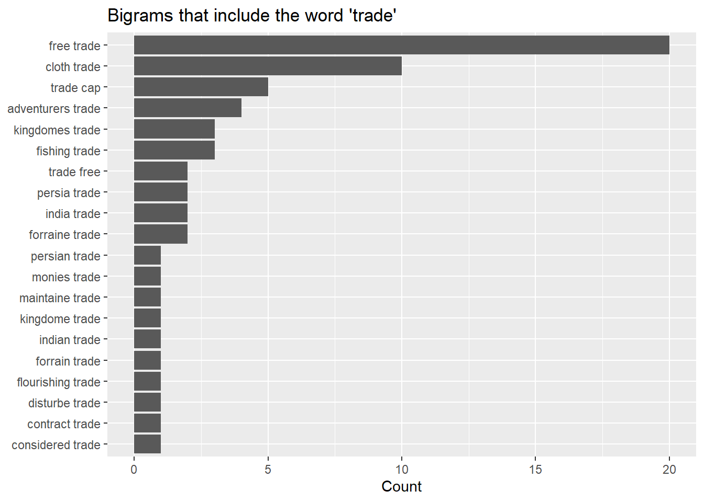
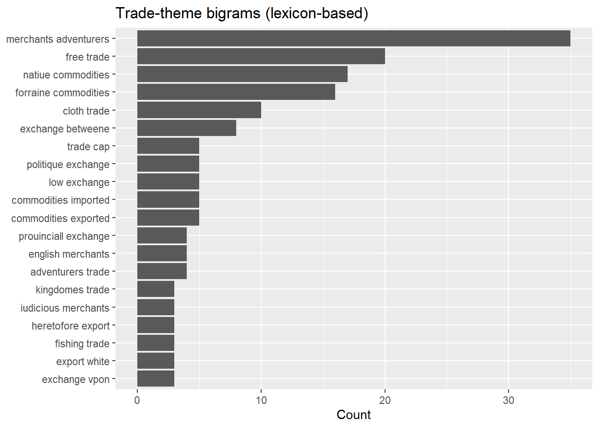
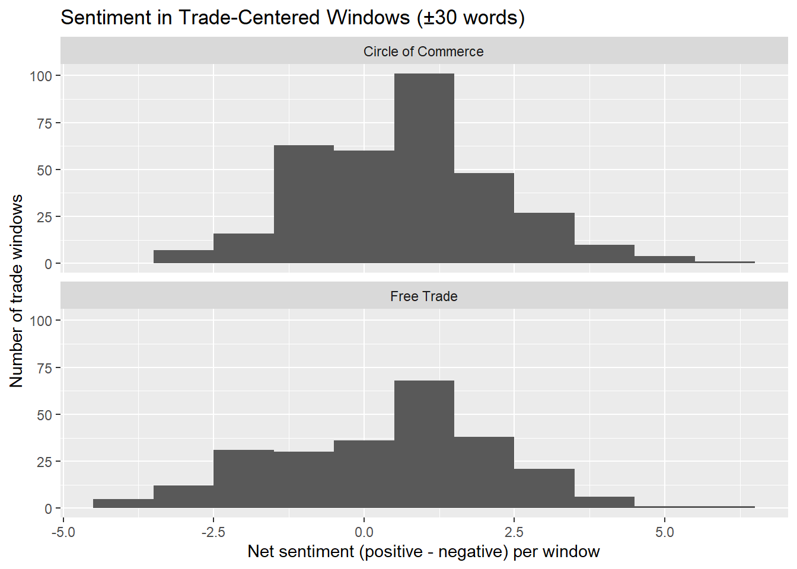

When looking at the data from week 2, you may have noticed some unusual characters (see, for example, the print out of the tibble “word_counts”). We need to make some decisions on how to handle them. This is where regular expressions come in. Regular expressions, abbreviated to regex, are a way to define patterns within strings. It will be helpful to get familiar with the package stringr (which we have used before without comment) by looking at the documentation here.
library(readr) library(dplyr) library(stringr) library(tibble) circle_raw <-read_file("texts/A07594__Circle_of_Commerce.txt") text_tbl <-tibble( doc_title ="The Circle of Commerce", text = circle_raw ) # Taking a look at text_tbl (or at least part of it since it's very long):text_tbl %>%select(doc_title)
# A tibble: 1 × 1
doc_title
<chr>
1 The Circle of Commerce
nchar(text_tbl$text)
[1] 191605
str_sub(text_tbl$text, 1, 400)
[1] "THE CIRCLE OF COMMERCE. The Prooeme. HERODOTVS in his CLIO, reportes that CROESVS King of LYDIA had a ſonne borne dumbe: and his Countrey being invaded, and the King himſelf in imminent danger of death by a certaine Perſian ready to lay violent hands on him; the Kings ſonne affected with the preſent danger, then ſpake that neuer ſpake before, and cryed alowd, O homo ne perimas Patrem! O man kill n"
Before we change any parts of the text, we are going to preserve the original text in case we change our mind later on. So we are creating a new tibble named text_tbl that contains the original text in a column named text_original:
In early modern print, the long s (ſ) represents the same letter as the modern s (both were used in print). When it appears explicitly in transcription or OCR, we can safely normalize it to a modern s. In historical texts, regex is often used for normalization, not “correction.” the long s isn’t an error, it’s just a variant (as the British “colour” vs. the American “color” are variants of the same word).
Regular expressions allow us to:
identify patterns in text, and
replace them systematically.
text_tbl <- text_tbl %>%mutate( text_clean =str_replace_all(text_original, "ſ", "s") ) # Let's count how many "ſ" we had before and after to check that the substitution worked:tibble(long_s_before =str_count(text_tbl$text_original, "ſ"),long_s_after =str_count(text_tbl$text_clean, "ſ"))
Sometimes, the long S is represented as an “f” in transcribed/OCR’ed texts, but I do not recommending trying to guess when an f “should be” an s. Make sure that you know why! If not, ask!
Finally, to pick up another loose thread from Week 2, we can use regex to selectively keep some punctuation and symbols. Remember that we used unnest_tokens to tokenize our text, but we learnt that it automatically removes punctuation. We can set that parameter to FALSE and keep all punctuation. But we can also be more selective. For example, if I only want to keep currency markers (British pounds for our texts), apostrophes, and hyphens, I can do the following:
text_tbl <- text_tbl %>%mutate(text_clean =str_replace_all(text_clean, regex("[[:punct:]&&[^£'-]]"), " ") # note I am writing over "text_clean", we could also create a new column instead )
NB: “^ at the start of a character class in regex means”NOT”. I am removing all punctuation except the list I am defining.
Standardizing Name Spellings:
Early Modern spelling was not standardized, meaning that the same word may have been spelled in a number of different ways by the same author within the same document. Name spelling was also not standardized and this fact presents some serious problems for us. While it’s pretty easy to decide that “friend” = “freind” (a peculiar spelling by the poet John Milton) for normalization processes, standardizing names in historical texts is not a neutral preprocessing step. It requires biographical and historical research.
If we decide that, for example, Smythe, Smyth, and Smith all refer to the same name, we are making a scholarly claim about identity, authorship, and equivalence across spelling variation. Different research questions may require different choices. Therefore, name standardization rules should always be documented and justified as part of your research.
Having said that, how would we go about standardizing the variant of Smith?
The first step is to define an explicit standardization map. This step will seem excessive right now, but if you are standardizing a large number of words, this vector will keep track of your decisions and it can be expanded as you go.
Now, we do not want to simply “search and replace” based on this map. The name-place “Smythfield” (which I am making up right now) should not be replaced by “Smithfield.” What we want to replace is the specific string “Smyth”. To do this, we have to think about word boundaries and typesetting (we want to catch all versions of the name regardless of case):
The code above uses \\b to denote the word boundary. This syntax is peculiar to R (in Python is would be \b instead). The boundary matches the position between: a word character ([A–Z a–z 0–9 _]) AND a non-word character (space, punctuation, start/end of string). So, \\bSmithe\\b will catch: “Smithe”, “Smithe.”, “Smithe)”, etc. but not Smithefield.
Note also that I added a new column with mutate, called text_norm. This way, the original column text_clean is not changed.
Describing the Text: N-grams and Trade
Let’s start to explore how The Circle of Commerce talks about “trade.” Last week we focused on single words and on all bigrams. But there are limitations to what word counts and context-free bigrams tell us about a text. What if we wanted to know more than just how often the word “trade” is used? An obvious, first question is to ask how Misselden describes trade in The Circle: is he focusing on “domestic trade” or “foreign trade”? Does the think that “trade is growing” or that “trade is declining”? We can start exploring these kinds of relationship by using n-grams containing the word trade. The first steps of this analysis will be a bit of review.
I am going to focus on bigrams as it will keep the lesson clean and easy to follow. Let’s start by setting up the needed packages (in addition to the ones we already loaded):
Bigrams tell us which words tend to appear next to each other in our text. But their raw frequencies can be dominated by turns of phrase (such as “the trade” or “this trade”) that may or may not be helpful in our analysis. So we will have to make some decisions on how to clean the texts and how to interpret our results.
We are going to start by tokenizing into bigrams. To do so, we are going to take two words at the time rather than one at the time when we use unnest_tokens.
bigrams_raw <- text_standard %>%select(doc_title, text_norm) %>%unnest_tokens(output ="bigram", input = text_norm, token ="ngrams", n =2)#let's take a lookbigrams_raw %>%count(bigram, sort =TRUE) %>%slice_head(n =10)
# A tibble: 10 × 2
bigram n
<chr> <int>
1 of the 386
2 in the 224
3 to the 144
4 and the 113
5 it is 102
6 of trade 91
7 for the 90
8 to be 80
9 of his 77
10 that the 73
Cleaning the bigrams:
As you can see from the list above, we never removed stopwords from text_standard. We are going to do this now. We will have to split up the bigrams into single words and remove stopwords for each “half” of the bigram (see week 2 for more details on cleaning):
data("stop_words") # the standard list from tidytext, but you can adapt the process from week 2 to include custom stop wordsbigrams_clean <- bigrams_raw %>%separate(bigram, into =c("word1", "word2"), sep =" ") %>%filter(!word1 %in% stop_words$word) %>%filter(!word2 %in% stop_words$word) %>%filter(str_detect(word1, "^[a-z]+$")) %>%# note: here I am removing ALL punctuation (earlier we kept specific symbols)filter(str_detect(word2, "^[a-z]+$"))bigrams_clean %>%count(word1, word2, sort =TRUE) %>%slice_head(n =10)
We are going to work on two straightforward “trade-focused” strategies that will give us a preliminary way to capture the concept of trade through token analysis:
Filter bigrams that literally contain the token trade
Use a small “trade lexicon” to capture near-synonyms (e.g., traffick, commerce, merchant, exchange)
Let’s start with the first strategy: which bigrams contain the token trade?
trade_bigrams <- bigram_counts %>%filter(str_detect(bigram, "\\btrade\\b")) # this line should look familiartrade_bigrams %>%slice_head(n =25)
trade_bigrams %>%slice_head(n =20) %>%mutate(bigram =fct_reorder(bigram, n)) %>%ggplot(aes(x = n, y = bigram)) +geom_col() +labs(title ="Bigrams that include the word 'trade'",x ="Count",y =NULL)

This is helpful: it lets us get a first sense of what types of trade might be most important conceptually to Misselden (“free trade” is clearly something that he is concerned with). But what about trade related terms, such as “commodities” or “exchange”? How do their bigrams fit in?
trade_theme_bigrams %>%slice_head(n =20) %>%mutate(bigram =fct_reorder(bigram, n)) %>%ggplot(aes(x = n, y = bigram)) +geom_col() +labs(title ="Trade-theme bigrams (lexicon-based)",x ="Count",y =NULL)

We now see that “natiue commodities” and “forraine commodities” are almost as important as “free trade” in The Circle of Commerce, and “merchants adventurers” is even more prominent.
Warning: while my lexicon tracks the alternate spelling for “traffic” (= “traffick”), it doesn’t account for other possible spelling variations (such as “native” = “natiue”). In addition, it treats the variations as distinct words, so that “native plant” is being counted as a different bigram from “natiue plant.” This is fine (in my opinion) at this exploratory stage, but it’s something that will need addressing in our analysis down the line.
For your own entertainment: test your understanding of regex by standardizing “traffick” to “traffic” in the text upstream of the bigram analysis.
Sentiment Analysis:
So far, we have explore the language around trade (and trade-related words), but what about the sentiment of this language? Sentiment analysis is a pretty standard technique in NLP projects, but, as we discussed in class, it doesn’t translate smoothly to specialized and historical discourse. For our purposes, we will want to create a targeted sentiment analysis where we measure sentiment only in passages near “trade” (and related terms), instead of across the whole document. This will give us more granular insight over the documents’ tone around the concept of trade.
Let’s compare The Circle of Commerce (1623) to the earlier text, Free Trade (1622). We will do this in steps:
Define a trade keyword set (e.g., trade/commerce/merchant).
Extract token windows around each keyword occurrence (±30 words). There is no hard and fast rule on the size of the window that you want to select. I settled on 30 as a good estimate/guess based on my experience in reading Early Modern texts.
texts_miss <- texts_miss %>%mutate(text_norm = text %>%str_replace_all("ſ", "s") %>%# long s as abovestr_replace_all("\\s+", " ") %>%# collapse whitespacestr_to_lower() )
Note: I am adding a line to collapse whitespace because historical texts can have irregular spaces due to archaic typography. We want to remove extraneous whitespaces and replace them with a single whitespace, such as “The circle of commerce” –> “The circle of commerce.” This problem is not unique to historical texts: as you are aware, social media posts don’t always adhere to the best typesetting (or spelling or grammar…) rules!
Important: since we are going to want to create a window of 30 words around our target trade terms, we are going to need to keep track of the position of each word in the document. We do this with the index (token_id).
To make sure that you understand what we are doing above, start by reviewing unnest_tokens from week 2. That should give you a sense of why we want token_id = row_number. Finally, inspect tokens in RStudio–does it look the way you expect it to?
Next, we are going to identify where our target terms (in this case, I am going to look at “trade”, “commerce”, “merchant”, and “merchants”, but you can play around with these choices) are in the texts:
I gave you a link to information about joins last week, go back to it to understand inner_join.
When you run this code, you will get a warning about “an unexpected many-to-many relationship”: this is fine and expected. Our target words appear frequently in the documents (they are, after all, mercantile documents about trade) and so the windows we are creating are overlapping, leading R to warn us about this issue. You can silence the warning if you want.
vnfitnesse of my pen to represent such pieces so also had i not the happines to attend those then or these since in any of their assemblies as did other merchants whereby my discourse might haue receiued some life and force from their worth and influence their good acceptation of my poore endeauours together with the approbation of many other noble
Just as you expected (right?), this is a 61-token window centered around one of our target words (“merchants” in this case).
Now we are reading to actually compute sentiments. Tidytext gives us access to a number of sentiment lexicons. We are going to use a binary one, bing (by Bing Liu and his collaborators), that categorizes words into positive or negative. As we discussed at the onset, this is not going to be historically accurate, but it will give us a reasonable baseline.
We are going to get into the code details in a second, but let’s start with the reasoning behind this approach:
We are going to look at all the 61-token windows around “trade”, “merchant”, etc.
Match words to the sentiment dictionary
Count: how many positive words vs negative words in each window?
Calculate a net score: positive count minus negative count [so, a window with 5 positive, 2 negative → net = +3 (overall positive)].
The code looks like this:
bing <-get_sentiments("bing")window_sentiment <- trade_windows %>%inner_join(bing, by ="word") %>%# keeps only sentiment-bearing wordscount(doc_title, window_id, sentiment) %>%pivot_wider(names_from = sentiment, values_from = n, values_fill =0) %>%mutate(net_sentiment = positive - negative)
Next, we create an overall summary of sentiments for each text. First:
We are going to find all occurrences of trade-related tokens and create a fixed size “window” around each term.
We then inner_join those tokens to the Bing sentiment lexicon so that each token can be labeled as either positive or negative. In this step, if a token doesn’t appear in the Bing lexicon, it gets dropped (a window that contains no Bing words will have no rows in window_sentiment). This means that n() is counting rows of window_sentiment. That is, n() counts the number of word-tokens matched in Bing, aggregated by doc_title.
Then, from window_sentiment, we compute:
The number of positive and negative Bing-matched token occurrences (so, if “good” appears five times, it contributes five positive occurrences) in our trade-related window.
The total net sentiment (= positive - negative)
The average net sentiment per sentiment-bearing window = net_sentiment / n_distinct(window_id) . That is, the denominator is the number of windows with at least one Bing match.
# A tibble: 2 × 6
doc_title windows total_positive total_negative total_net_sentiment
<chr> <int> <int> <int> <int>
1 Circle of Commerce 338 556 327 229
2 Free Trade 249 404 310 94
# ℹ 1 more variable: avg_net_per_window <dbl>
Based on this summary, we can start to see that TheCircle of Commerce uses more positive language around the trade-related terms that we selected. To get a better handle of this, we are going to plot the distribution of sentiment scores across all the trade windows for each document as a bar graph:
ggplot(window_sentiment, aes(x = net_sentiment)) +geom_histogram(binwidth =1) +facet_wrap(~ doc_title, ncol =1) +labs(title ="Sentiment in Trade-Centered Windows (±30 words)",x ="Net sentiment (positive - negative) per window",y ="Number of trade windows" )

Addendum about Sentiments:
We want to be careful in how we interpret sentiment analysis. What we are computing above is a score based on the common (standard?) usage of terms such as “wonderful” or “happy” or “depressing”, where we label certain terms as expressing either positive or negative sentiments. These are of course deeply cultural questions. We all know the stereotypes of Italians being effusive while the British are reserved (as an Italian I do not in the least approve of this absolutely terrible and unfair statement)–does a “great!” from two different speakers mean the same level of positive approval?
The past is culturally different to the present and we have to be very careful with sentiment analysis with historical texts. The correct solution would be to create our own, historically based lexicon by becoming familiar with the writing style and linguistic nuances of the 17th century and then scoring terminology (or better yet passages and phrases) for positive or negative sentiments. This is obviously labor intensive. But competent text analysis on any specialized language (historical, medical, legal, etc) requires expertise and care.